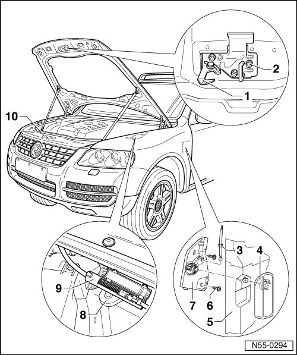

Locking and Unlocking Components Assembly Overview
Hood
Locking and Unlocking Components Assembly Overview

1 Catch
• Removing:
- Remove the hex nuts - 2 -.
• Adjusting:
- Catch can be adjusted toward the left or right in its longitudinal holes.
2 Hex nut
• Quantity: 3
• 12 Nm
3 Release
• Is divided by release coupling - 9 -.
• the release can be disconnected at release coupling for removing the front end.
• Removing and Installing, refer to --> [ Operating Lever ] Hood
5 A-pillar lower trim
6 Bolt
• 1.5 Nm
• Quantity: 2
7 Mounting bracket
8 Bracket
• Secured to longitudinal member for upper wheel housing on driver side.
9 Release Coupling
10 Lid lock
• Removing and Installing, refer to --> [ Rear Lid Lock ] Hood
• Adjusting, refer to --> [ Hood, Adjusting ] Hood, Adjusting